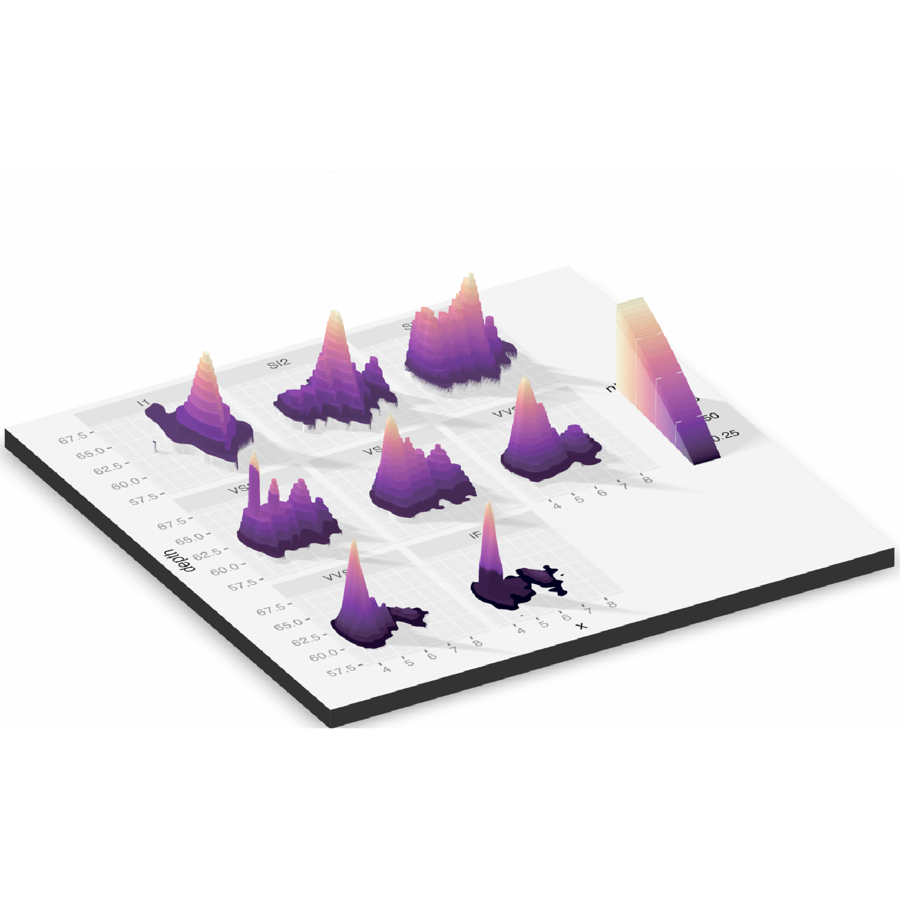
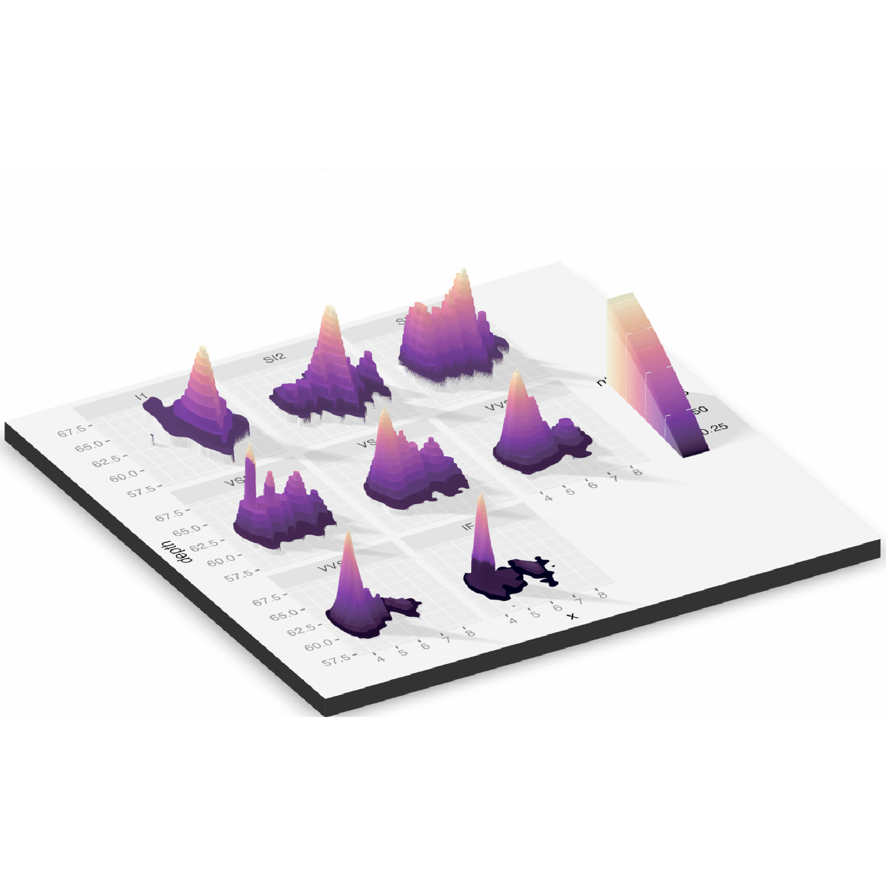
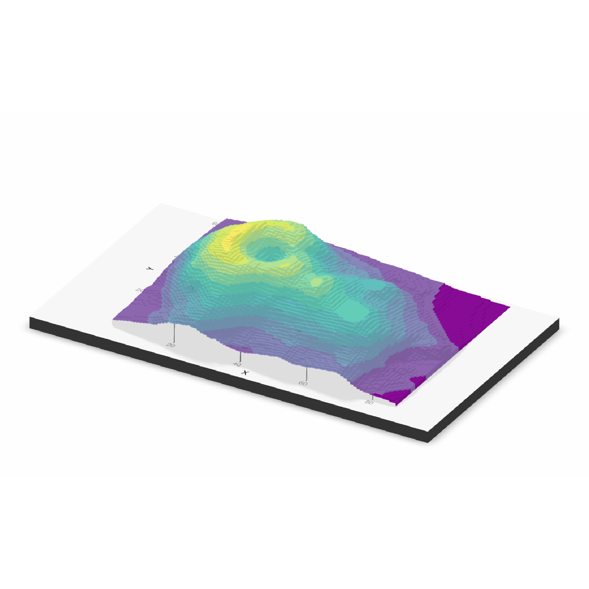
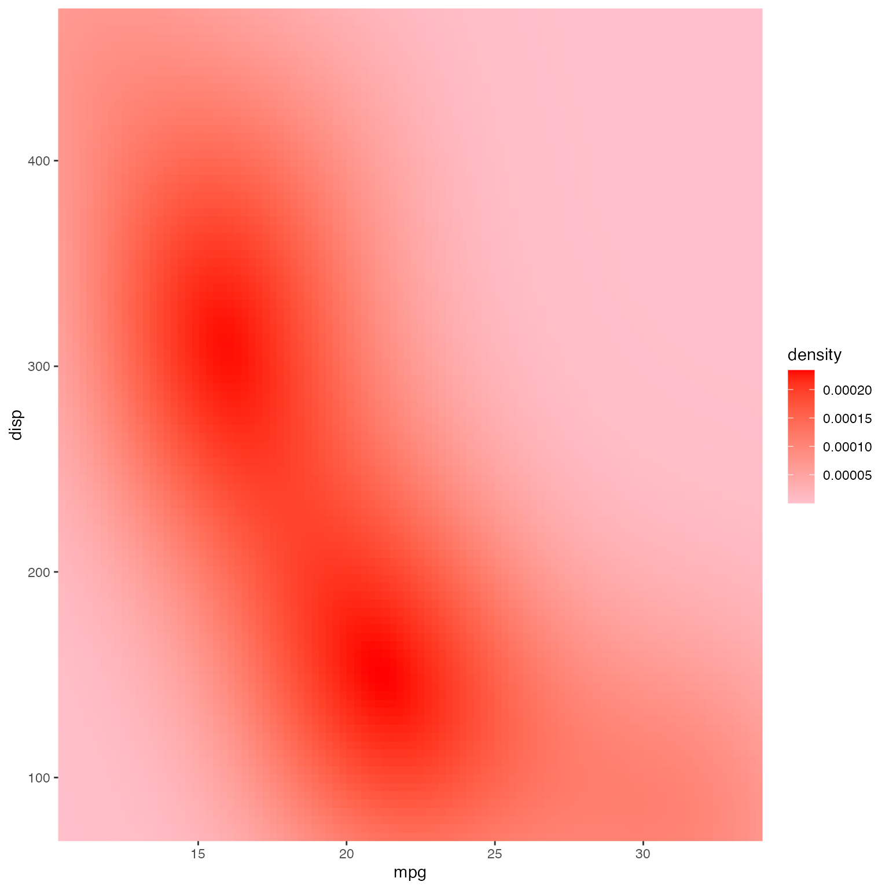
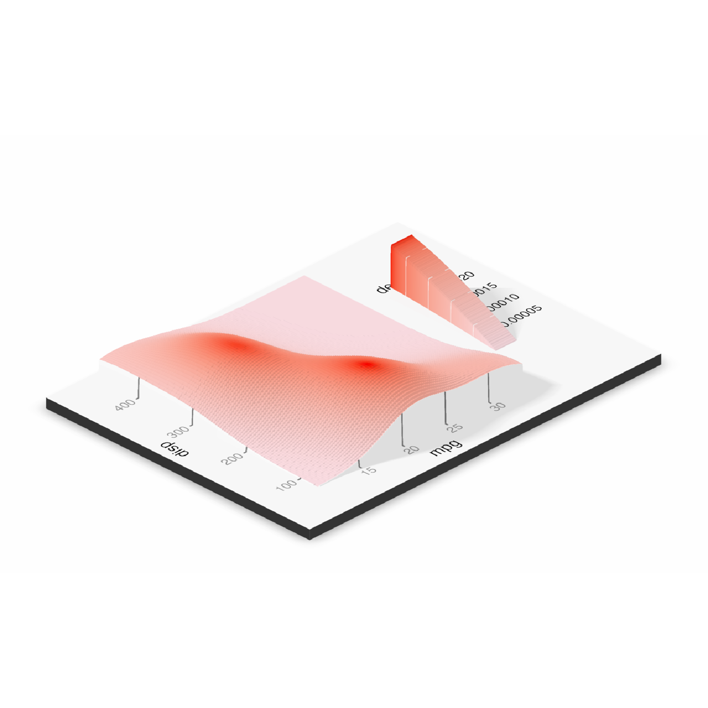
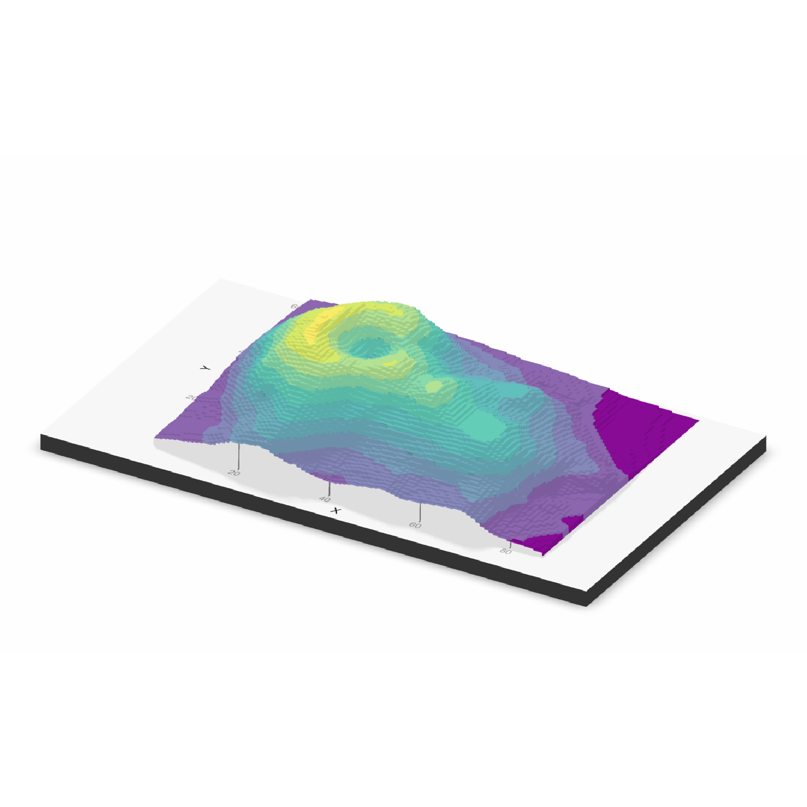
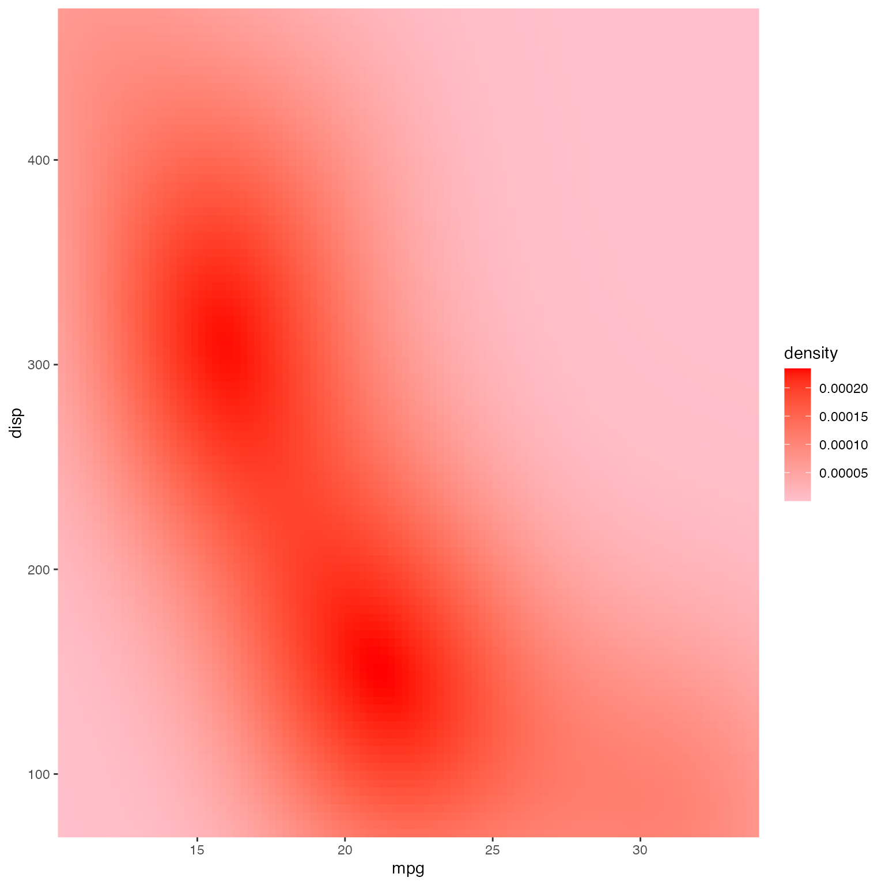
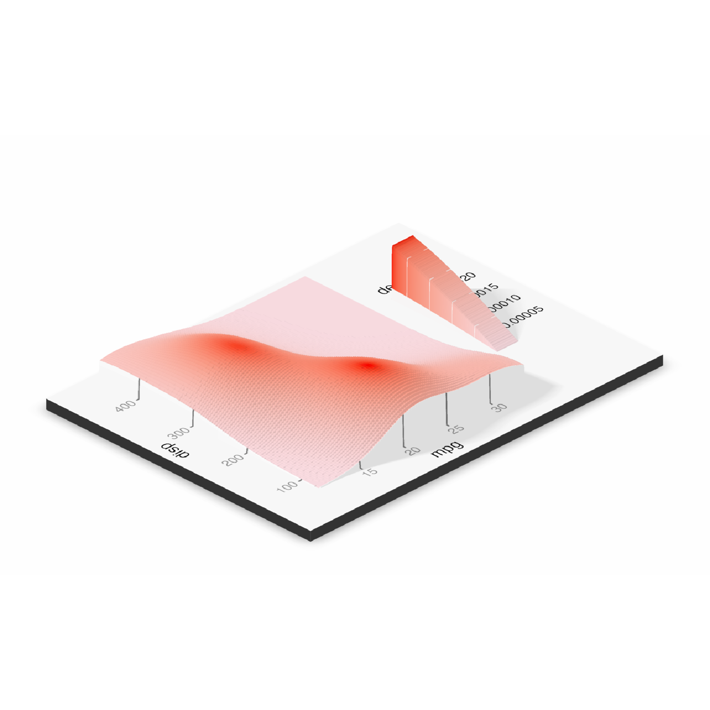

Plots a ggplot2 object in 3D by mapping the color or fill aesthetic to elevation.
Currently, this function does not transform lines mapped to color into 3D.
If there are multiple legends/guides due to multiple aesthetics being mapped (e.g. color and shape), the package author recommends that the user pass the order of the guides manually using the ggplot2 function "guides()`. Otherwise, the order may change when processing the ggplot2 object and result in a mismatch between the 3D mapping and the underlying plot.
Using the shape aesthetic with more than three groups is not recommended, unless the user passes in custom, solid shapes. By default in ggplot2, only the first three shapes are solid, which is a requirement to be projected into 3D.
plot_gg(
ggobj,
width = 3,
height = 3,
height_aes = NULL,
invert = FALSE,
shadow_intensity = 0.5,
units = c("in", "cm", "mm"),
scale = 150,
pointcontract = 0.7,
offset_edges = FALSE,
flat_plot_render = FALSE,
flat_distance = "auto",
flat_transparent_bg = FALSE,
flat_direction = "-z",
shadow = TRUE,
shadowdepth = "auto",
shadowcolor = "auto",
shadow_darkness = 0.5,
background = "white",
preview = FALSE,
raytrace = TRUE,
sunangle = 315,
anglebreaks = seq(30, 40, 0.1),
multicore = FALSE,
lambert = TRUE,
triangulate = TRUE,
max_error = 0.001,
max_tri = 0,
verbose = FALSE,
emboss_text = 0,
emboss_grid = 0,
reduce_size = NULL,
save_height_matrix = FALSE,
save_shadow_matrix = FALSE,
saved_shadow_matrix = NULL,
...
)Arguments
- ggobj
ggplot object to projected into 3D.
- width
Default `3`. Width of ggplot, in `units`.
- height
Default `3`. Height of ggplot, in `units`.
- height_aes
Default `NULL`. Whether the `fill` or `color` aesthetic should be used for height values, which the user can specify by passing either `fill` or `color` to this argument. Automatically detected. If both `fill` and `color` aesthetics are present, then `fill` is default.
- invert
Default `FALSE`. If `TRUE`, the height mapping is inverted.
- shadow_intensity
Default `0.5`. The intensity of the calculated shadows.
- units
Default `in`. One of c("in", "cm", "mm").
- scale
Default `150`. Multiplier for vertical scaling: a higher number increases the height of the 3D transformation.
- pointcontract
Default `0.7`. This multiplies the size of the points and shrinks them around their center in the 3D surface mapping. Decrease this to reduce color bleed on edges, and set to `1` to turn off entirely. Note: If `size` is passed as an aesthetic to the same geom that is being mapped to elevation, this scaling will not be applied. If `alpha` varies on the variable being mapped, you may want to set this to `1`, since the points now have a non-zero width stroke outline (however, mapping `alpha` in the same variable you are projecting to height is probably not a good choice. as the `alpha` variable is ignored when performing the 3D projection).
- offset_edges
Default `FALSE`. If `TRUE`, inserts a small amount of space between polygons for "geom_sf", "geom_tile", "geom_hex", and "geom_polygon" layers. If you pass in a number, the space between polygons will be a line of that width. You can also specify a number to control the thickness of the offset. Note: this feature may end up removing thin polygons from the plot entirely--use with care.
- flat_plot_render
Default `FALSE`. Whether to render a flat version of the ggplot above (or alongside) the 3D version.
- flat_distance
Default `"auto"`. Distance to render the flat version of the plot from the 3D version.
- flat_transparent_bg
Default `FALSE`. Whether to set the background of the flat version of the ggplot to transparent.
- flat_direction
Default `"-z"`. Direction to render the flat copy of the plot, if `flat_plot_render = TRUE`. Other options `c("z", "x", "-x", "y", "-y")`.
- shadow
Default `TRUE`. If `FALSE`, no shadow is rendered.
- shadowdepth
Default `auto`, which sets it to `soliddepth - soliddepth/10`. Depth of the shadow layer.
- shadowcolor
Default `auto`. Color of the shadow, automatically computed as `shadow_darkness` the luminance of the `background` color in the CIELab colorspace if not specified.
- shadow_darkness
Default `0.5`. Darkness of the shadow, if `shadowcolor = "auto"`.
- background
Default `"white"`. Background color.
- preview
Default `FALSE`. If `TRUE`, the raytraced 2D ggplot will be displayed on the current device.
- raytrace
Default `FALSE`. Whether to add a raytraced layer.
- sunangle
Default `315` (NW). If raytracing, the angle (in degrees) around the matrix from which the light originates.
- anglebreaks
Default `seq(30,40,0.1)`. The azimuth angle(s), in degrees, as measured from the horizon from which the light originates.
- multicore
Default `FALSE`. If raytracing and `TRUE`, multiple cores will be used to compute the shadow matrix. By default, this uses all cores available, unless the user has set `options("cores")` in which the multicore option will only use that many cores.
- lambert
Default `TRUE`. If raytracing, changes the intensity of the light at each point based proportional to the dot product of the ray direction and the surface normal at that point. Zeros out all values directed away from the ray.
- triangulate
Default `FALSE`. Reduce the size of the 3D model by triangulating the height map. Set this to `TRUE` if generating the model is slow, or moving it is choppy. Will also reduce the size of 3D models saved to disk.
- max_error
Default `0.001`. Maximum allowable error when triangulating the height map, when `triangulate = TRUE`. Increase this if you encounter problems with 3D performance, want to decrease render time with `render_highquality()`, or need to save a smaller 3D OBJ file to disk with `save_obj()`,
- max_tri
Default `0`, which turns this setting off and uses `max_error`. Maximum number of triangles allowed with triangulating the height map, when `triangulate = TRUE`. Increase this if you encounter problems with 3D performance, want to decrease render time with `render_highquality()`, or need to save a smaller 3D OBJ file to disk with `save_obj()`,
- verbose
Default `TRUE`, if `interactive()`. Prints information about the mesh triangulation if `triangulate = TRUE`.
- emboss_text
Default `0`, max `1`. Amount to emboss the text, where `1` is the tallest feature in the scene.
- emboss_grid
Default `0`, max `1`. Amount to emboss the grid lines, where `1` is the tallest feature in the scene. By default, the minor grid lines will be half the size of the major lines. Pass a length-2 vector to specify them seperately (second value is the minor grid height).
- reduce_size
Default `NULL`. A number between `0` and `1` that specifies how much to reduce the resolution of the plot, for faster plotting. By default, this just decreases the size of height map, not the image. If you wish the image to be reduced in resolution as well, pass a numeric vector of size 2.
- save_height_matrix
Default `FALSE`. If `TRUE`, the function will return the height matrix used for the ggplot.
- save_shadow_matrix
Default `FALSE`. If `TRUE`, the function will return the shadow matrix for use in future updates via the `shadow_cache` argument passed to `ray_shade`.
- saved_shadow_matrix
Default `NULL`. A cached shadow matrix (saved by the a previous invocation of `plot_gg(..., save_shadow_matrix=TRUE)` to use instead of raytracing a shadow map each time.
- ...
Additional arguments to be passed to `plot_3d()`.
Value
Opens a 3D plot in rgl.
Examples
library(ggplot2)
library(viridis)
#> Loading required package: viridisLite
# \dontshow{
options("cores"=2)
# }
ggdiamonds = ggplot(diamonds, aes(x, depth)) +
stat_density_2d(aes(fill = stat(nlevel)), geom = "polygon", n = 200, bins = 50,contour = TRUE) +
facet_wrap(clarity~.) +
scale_fill_viridis_c(option = "A")
if(rayshader:::run_documentation()) {
plot_gg(ggdiamonds,multicore = TRUE,width=5,height=5,scale=250,windowsize=c(1400,866),
zoom = 0.55, phi = 30)
render_snapshot()
}
#> Warning: `stat(nlevel)` was deprecated in ggplot2 3.4.0.
#> ℹ Please use `after_stat(nlevel)` instead.
 #Change the camera angle and take a snapshot:
if(rayshader:::run_documentation()) {
render_camera(zoom=0.5,theta=-30,phi=30)
render_snapshot(clear = TRUE)
}

#Contours and other lines will automatically be ignored. Here is the volcano dataset:
ggvolcano = volcano %>%
reshape2::melt() %>%
ggplot() +
geom_tile(aes(x=Var1,y=Var2,fill=value)) +
geom_contour(aes(x=Var1,y=Var2,z=value),color="black") +
scale_x_continuous("X",expand = c(0,0)) +
scale_y_continuous("Y",expand = c(0,0)) +
scale_fill_gradientn("Z",colours = terrain.colors(10)) +
coord_fixed()
ggvolcano
#Change the camera angle and take a snapshot:
if(rayshader:::run_documentation()) {
render_camera(zoom=0.5,theta=-30,phi=30)
render_snapshot(clear = TRUE)
}

#Contours and other lines will automatically be ignored. Here is the volcano dataset:
ggvolcano = volcano %>%
reshape2::melt() %>%
ggplot() +
geom_tile(aes(x=Var1,y=Var2,fill=value)) +
geom_contour(aes(x=Var1,y=Var2,z=value),color="black") +
scale_x_continuous("X",expand = c(0,0)) +
scale_y_continuous("Y",expand = c(0,0)) +
scale_fill_gradientn("Z",colours = terrain.colors(10)) +
coord_fixed()
ggvolcano
 if(rayshader:::run_documentation()) {
plot_gg(ggvolcano, multicore = TRUE, raytrace = TRUE, width = 7, height = 4,
scale = 300, windowsize = c(1400, 866), zoom = 0.6, phi = 30, theta = 30)
render_snapshot(clear = TRUE)
}
#> Warning: Removed 1861 rows containing missing values (`geom_contour()`).
if(rayshader:::run_documentation()) {
plot_gg(ggvolcano, multicore = TRUE, raytrace = TRUE, width = 7, height = 4,
scale = 300, windowsize = c(1400, 866), zoom = 0.6, phi = 30, theta = 30)
render_snapshot(clear = TRUE)
}
#> Warning: Removed 1861 rows containing missing values (`geom_contour()`).
 #Here, we will create a 3D plot of the mtcars dataset. This automatically detects
#that the user used the `color` aesthetic instead of the `fill`.
mtplot = ggplot(mtcars) +
geom_point(aes(x=mpg,y=disp,color=cyl)) +
scale_color_continuous(limits=c(0,8))
#Preview how the plot will look by setting `preview = TRUE`: We also adjust the angle of the light.
if(rayshader:::run_documentation()) {
plot_gg(mtplot, width=3.5, sunangle=225, preview = TRUE)
}

if(rayshader:::run_documentation()) {
plot_gg(mtplot, width=3.5, multicore = TRUE, windowsize = c(1400,866), sunangle=225,
zoom = 0.60, phi = 30, theta = 45)
render_snapshot(clear = TRUE)
}

#Now let's plot a density plot in 3D.
mtplot_density = ggplot(mtcars) +
stat_density_2d(aes(x=mpg,y=disp, fill=..density..), geom = "raster", contour = FALSE) +
scale_x_continuous(expand=c(0,0)) +
scale_y_continuous(expand=c(0,0)) +
scale_fill_gradient(low="pink", high="red")
mtplot_density
#> Warning: The dot-dot notation (`..density..`) was deprecated in ggplot2 3.4.0.
#> ℹ Please use `after_stat(density)` instead.

if(rayshader:::run_documentation()) {
plot_gg(mtplot_density, width = 4,zoom = 0.60, theta = -45, phi = 30,
windowsize = c(1400,866))
render_snapshot(clear = TRUE)
}
#Here, we will create a 3D plot of the mtcars dataset. This automatically detects
#that the user used the `color` aesthetic instead of the `fill`.
mtplot = ggplot(mtcars) +
geom_point(aes(x=mpg,y=disp,color=cyl)) +
scale_color_continuous(limits=c(0,8))
#Preview how the plot will look by setting `preview = TRUE`: We also adjust the angle of the light.
if(rayshader:::run_documentation()) {
plot_gg(mtplot, width=3.5, sunangle=225, preview = TRUE)
}

if(rayshader:::run_documentation()) {
plot_gg(mtplot, width=3.5, multicore = TRUE, windowsize = c(1400,866), sunangle=225,
zoom = 0.60, phi = 30, theta = 45)
render_snapshot(clear = TRUE)
}

#Now let's plot a density plot in 3D.
mtplot_density = ggplot(mtcars) +
stat_density_2d(aes(x=mpg,y=disp, fill=..density..), geom = "raster", contour = FALSE) +
scale_x_continuous(expand=c(0,0)) +
scale_y_continuous(expand=c(0,0)) +
scale_fill_gradient(low="pink", high="red")
mtplot_density
#> Warning: The dot-dot notation (`..density..`) was deprecated in ggplot2 3.4.0.
#> ℹ Please use `after_stat(density)` instead.

if(rayshader:::run_documentation()) {
plot_gg(mtplot_density, width = 4,zoom = 0.60, theta = -45, phi = 30,
windowsize = c(1400,866))
render_snapshot(clear = TRUE)
}
 #This also works facetted.
mtplot_density_facet = mtplot_density + facet_wrap(~cyl)
#Preview this plot in 2D:
if(rayshader:::run_documentation()) {
plot_gg(mtplot_density_facet, preview = TRUE)
}
#This also works facetted.
mtplot_density_facet = mtplot_density + facet_wrap(~cyl)
#Preview this plot in 2D:
if(rayshader:::run_documentation()) {
plot_gg(mtplot_density_facet, preview = TRUE)
}
 if(rayshader:::run_documentation()) {
plot_gg(mtplot_density_facet, windowsize=c(1400,866),
zoom = 0.55, theta = -10, phi = 25)
render_snapshot(clear = TRUE)
}
if(rayshader:::run_documentation()) {
plot_gg(mtplot_density_facet, windowsize=c(1400,866),
zoom = 0.55, theta = -10, phi = 25)
render_snapshot(clear = TRUE)
}
 #That is a little cramped. Specifying a larger width will improve the readability of this plot.
if(rayshader:::run_documentation()) {
plot_gg(mtplot_density_facet, width = 6, preview = TRUE)
}
#That is a little cramped. Specifying a larger width will improve the readability of this plot.
if(rayshader:::run_documentation()) {
plot_gg(mtplot_density_facet, width = 6, preview = TRUE)
}
 #That's better. Let's plot it in 3D, and increase the scale.
if(rayshader:::run_documentation()) {
plot_gg(mtplot_density_facet, width = 6, windowsize=c(1400,866),
zoom = 0.55, theta = -10, phi = 25, scale=300)
render_snapshot(clear = TRUE)
}
#That's better. Let's plot it in 3D, and increase the scale.
if(rayshader:::run_documentation()) {
plot_gg(mtplot_density_facet, width = 6, windowsize=c(1400,866),
zoom = 0.55, theta = -10, phi = 25, scale=300)
render_snapshot(clear = TRUE)
}
 #We can also render a flat version of the plot alongside (or above/below) the 3D version.
if(rayshader:::run_documentation()) {
plot_gg(mtplot_density_facet, width = 6, windowsize=c(1400,866),
zoom = 0.65, theta = -25, phi = 35, scale=300, flat_plot_render=TRUE,
flat_direction = "x")
render_snapshot(clear = TRUE)
}
#We can also render a flat version of the plot alongside (or above/below) the 3D version.
if(rayshader:::run_documentation()) {
plot_gg(mtplot_density_facet, width = 6, windowsize=c(1400,866),
zoom = 0.65, theta = -25, phi = 35, scale=300, flat_plot_render=TRUE,
flat_direction = "x")
render_snapshot(clear = TRUE)
}